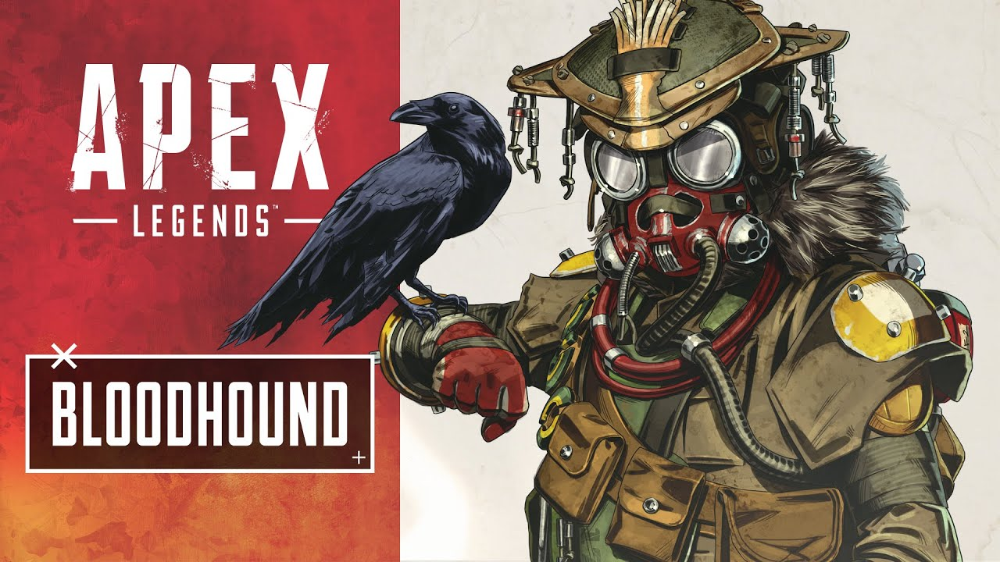

Bloodhound

Passive
- Actions performed by enemies leave markers that Bloodhound can see and track
Tactical
- In a 125° cone in front of you, all enemies, traps, clues, and Loot Ticks are highlighted and tracked to be seen by you
and your allies.
- The tracking lasts for 3 seconds on players. Traps and Loot Ticks will remain highlighted for as long as they exist.
Ultimate
- Transform into the ultimate hunter. Enhances your senses, allowing you to see cold tracks and move faster. Downing
opponents extend duration.
- Increases your speed by 30%.
- Your vision turns black and white, except for enemies, which are highlighted in red.